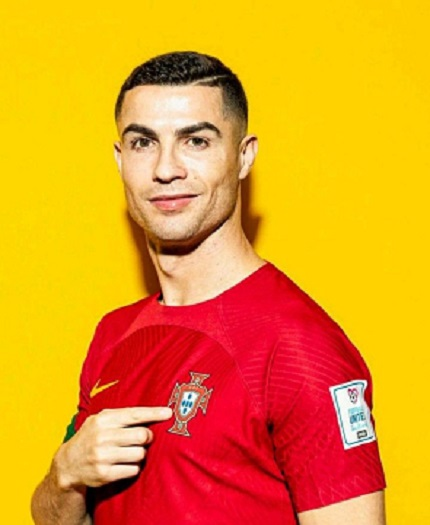

Lionel Andrés Messi, also known as Leo Messi, is an Argentine professional footballer who most recently played as a forward for Ligue 1 club Paris Saint-Germain and captains the Argentina national team.
Born: June 24, 1987 (age 36 years).
Current team: Argentina national football team.
Learn More
Cristiano Ronaldo dos Santos Aveiro GOIH ComM is a Portuguese professional footballer who plays as a forward for and captains both Saudi Professional League club Al Nassr and the Portugal national team.
Born: February 5, 1985 (age 38 years), Hospital Dr. Nélio Mendonça, Funchal, Portugal.
Current team: Al-Nassr FC.
Learn More
| Messi | Ronaldo | ||
|---|---|---|---|
| GOALS | 807 | GOALS | 838 |
| ASSISTS | 357 | ASSISTS | 236 |
| APPS | 1028 | APPS | 1168 |
About Me